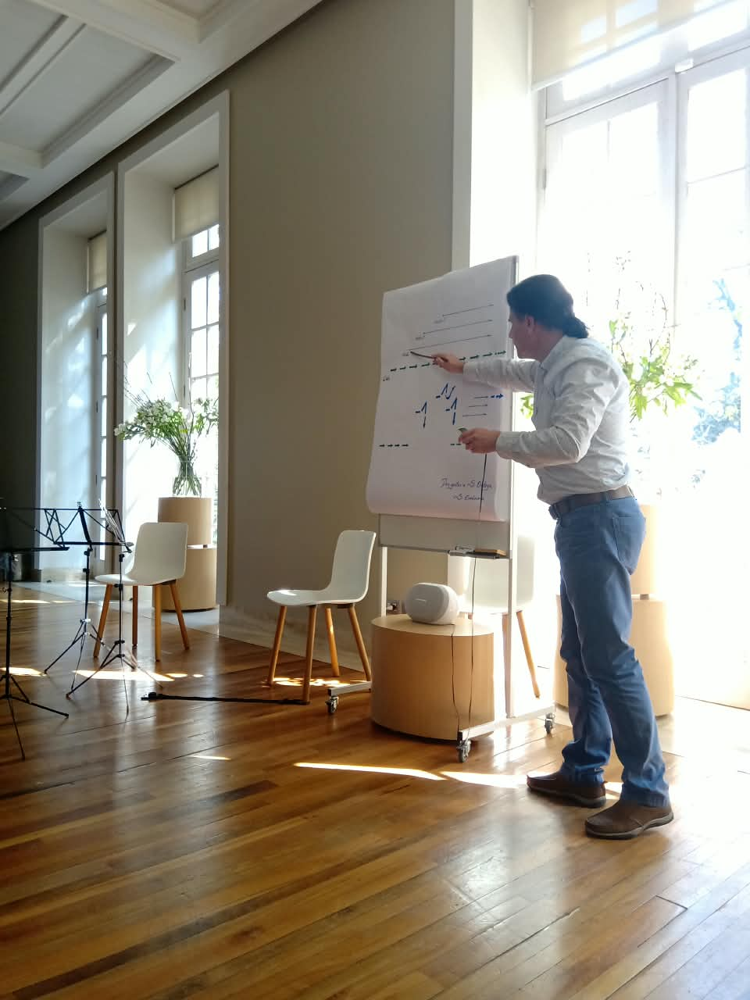
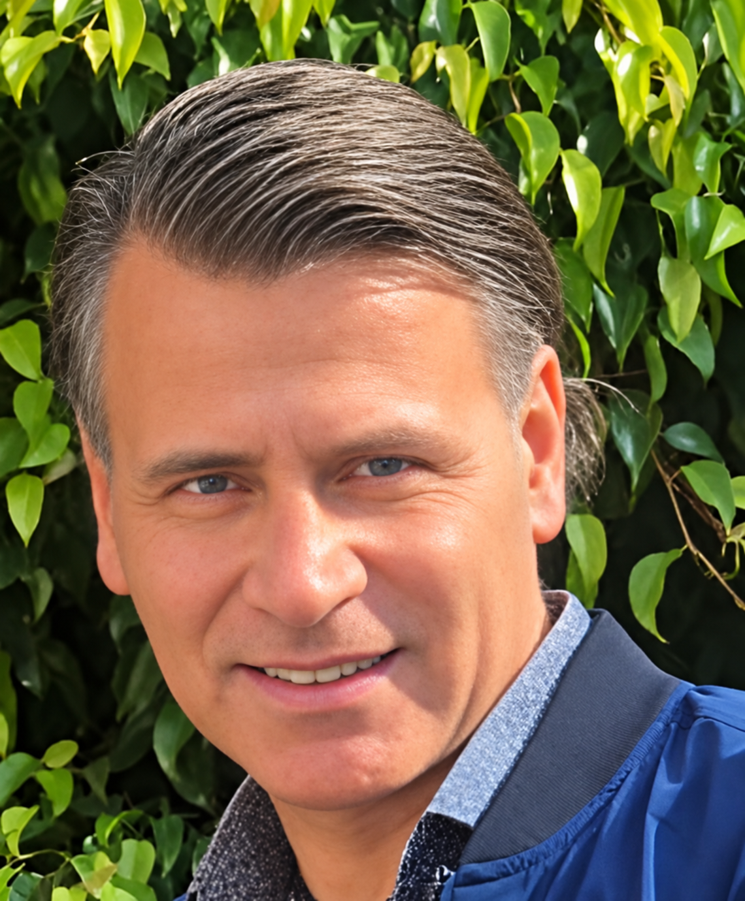
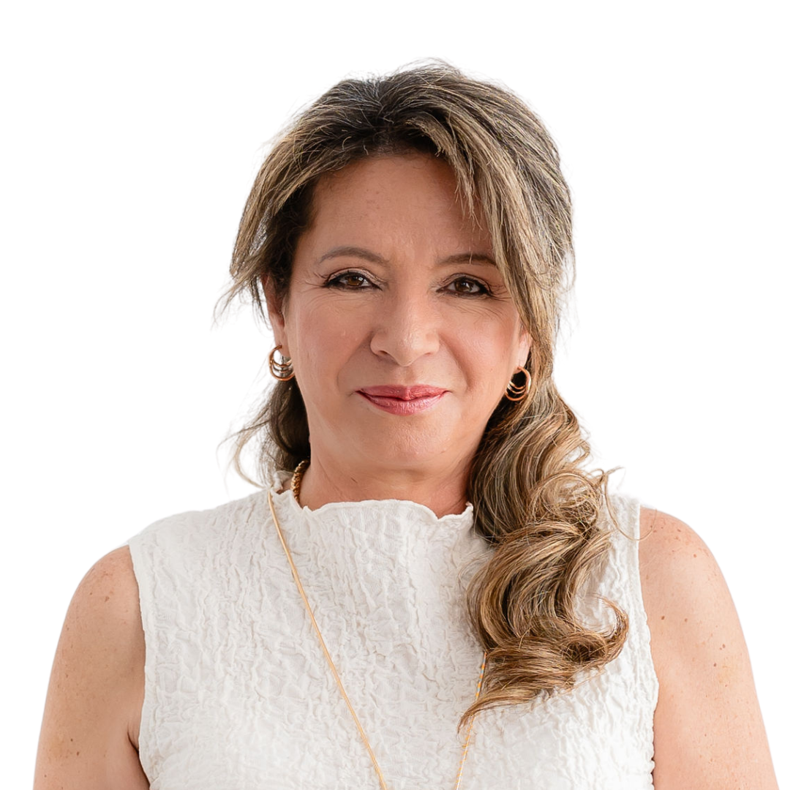

Vivencial antes que teórico
El equipo experimenta la metodología y entiende desde su propia práctica cómo trasladarla al aula.
FORMACIÓN DOCENTE · LATINOAMÉRICA
Formación docente con música para responder a la atención dispersa, la convivencia y el bienestar de quienes educan. Herramientas vivenciales que se convierten en prácticas posibles para el aula.

EL MÉTODO
Potenciación Creativa no propone "más actividades". Propone experiencias de escucha, juego y movimiento que ayudan a los educadores a abordar necesidades reales de su comunidad.
El equipo experimenta la metodología y entiende desde su propia práctica cómo trasladarla al aula.
Cada formación entrega recursos concretos, adaptables a edad, asignatura y contexto institucional.
Las propuestas se conectan entre sí para acompañar un proceso de desarrollo pedagógico.
SOLUCIONES PARA LOS RETOS DE HOY
La edad orienta la propuesta; el reto pedagógico la vuelve relevante. Diseñamos programas para una necesidad concreta y un ciclo educativo definido.
Experiencias de integración, expresión y cuidado del vínculo para prevenir conflictos y fortalecer el clima escolar.
Recursos de escucha y estructura musical para acompañar concentración, lectoescritura y pensamiento lógico.
Metodologías para activar imaginación, pensamiento divergente y expresión en cualquier asignatura.
Espacios de autocuidado y regulación para equipos exigidos por el ritmo de la educación actual.
RUTAS DE FORMACIÓN DOCENTE
Las rutas dan continuidad a la formación: comienzan con herramientas inmediatas y pueden avanzar hacia especialización, mentoría y liderazgo pedagógico.
Para quien quiere incorporar herramientas creativas y musicales en su práctica cotidiana.
Para educadores que quieren comprender y diseñar experiencias de mayor alcance.
Para líderes pedagógicos que buscan movilizar una práctica creativa dentro de su institución.
PROGRAMAS PARA INSTITUCIONES
Los programas reúnen cursos de acuerdo con un objetivo institucional. Su duración, modalidad y acompañamiento se ajustan a cada comunidad.
Para comunidades que buscan fortalecer convivencia, participación y prevención de la violencia.
DANZAS CIRCULARES · JUEGOS MUSICALES · DESARROLLO HUMANOPara acompañar atención, concentración y los procesos de aprendizaje desde prácticas musicales aplicables.
POTENCIACIÓN CREATIVA N1 · INICIACIÓN MUSICAL · ANÁLISIS N2Para instituciones que quieren integrar pensamiento creativo y expresión en sus prácticas pedagógicas.
IMAGINACIÓN CREADORA · ANÁLISIS N2 · CANTO INFANTILPara equipos que necesitan espacios de regulación, autocuidado y reconexión con su tarea educativa.
DESARROLLO HUMANO CREATIVO · TALLERES VIVENCIALESCATÁLOGO BASE
Estos cursos pueden integrarse a una ruta individual o a una propuesta institucional. La elección se define por ciclo educativo y reto prioritario.
Estimulación afectiva y sensorial con música e iniciación musical del párvulo.
Potenciación Creativa Nivel 1, juegos musicales y canto infantil creativo.
Análisis musical, imaginación creadora y movimiento para aprender y convivir.
Danzas y juegos inclusivos para cultivar cooperación y presencia grupal.
Un espacio musicoterapéutico de cuidado para equipos educativos.
Herramientas de visualización, cuerpo y expresión para ampliar posibilidades de enseñanza.
QUIÉNES SOSTIENEN EL PROGRAMA
La propuesta integra una trayectoria pedagógica desarrollada durante décadas con acompañamiento cercano a las instituciones de Latinoamérica.

Profesor de Música de la Universidad de Concepción y creador del Programa de Potenciación Creativa. Desde 1997 ha impartido su propuesta en ciudades de siete países y es autor de manuales metodológicos.

Ingeniera civil y coach ontológica. Docente del programa en Latinoamérica desde 2001 y responsable de su operación en Colombia, con experiencia formando equipos educativos.
CÓMO EMPEZAMOS
Cuéntanos el ciclo educativo, el número de participantes y el reto que quieren abordar.
Construimos una propuesta con objetivos, formato y alternativas de implementación.
Realizamos la formación presencial o remota con materiales para seguir practicando.
Cuando el programa lo requiere, apoyamos la aplicación y reflexión posterior.
CONVERSEMOS
Cuéntanos qué está viviendo tu comunidad educativa. Te responderemos con una propuesta inicial de programa, modalidad y próximos pasos.